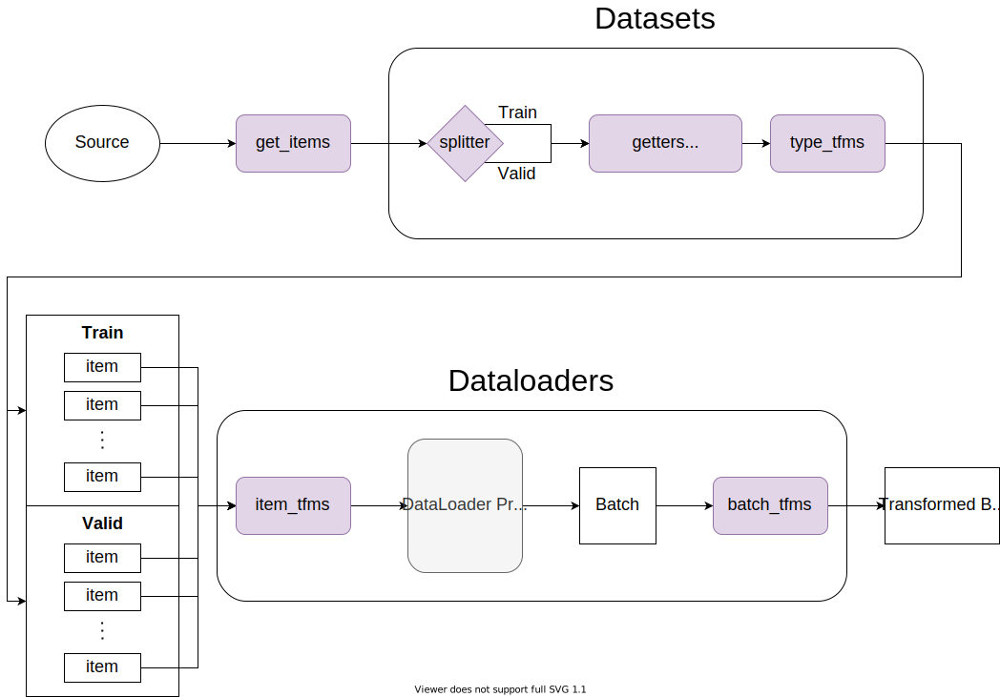

Introduction
Fastai’s DataBlock API is a flexible and easy way to get and transform your data into something ready to be fed to a model. The documentation and tutorial give some good examples of how to use this API. However, I still find it unclear how each argument in Datablock influences the different steps in the data transformation process.
In this post, I will try to visualize the data transformation process and explain the different steps the DataBlock API can hook into. Hopefully, this will make it easier for people to customize this process using this API.
DataBlock API as A Blueprint for Data Transformation
The data transformation process constructed by Fastai is depicted as follows, where the colored steps can be configured through the DataBlock API:

get_item: This is the first optional function that takes the source as input, and returns items to be processed by the
Datasetsobject in Fastai. If it’s not specified, the source will be passed directly toDatasets.splitter: The splitter is a function that returns two lists of indices, one for the training data set and one for the validation data set so that
DatasetsandDataloadersknow how to split the data into train/valid.getters (or get_x, get_y): getters are a list of functions that is applied to each item passed to them to generate corresponding x and y. You can also specify get_x and/or get_y specifically. They will overwerite getters as
get_x + get_y. Note, the number of functions in get_x and get_y should be consistent with the number of x and y specified in blocks and n_inp (see below).type_tfms: These are collected from your
TranformBlocks you specified in blocks (explained below). They will transform your x and y respectively, according to the blocks you used for x and y.item_tfms: A list of
Transforms to be combined with the item_tfms in yourTransformBlocks for x and y, respectively. These are applied to each item in theDataloadersobject before batches are created. For example, we can resize each image to the same size at this step.batch_tfms: A list of
Transforms to be combined with the batch_tfms in yourTransformBlocks for x and y specified in blocks. These are applied after a batch is created.
(Note that the Transforms need to be different based on what type of object it’s applied on, whether it’s the training or validation set. This is achieved through type dispatch and the split_idx variable in Transform respectively. Please see the next section Deeper Dive for more details.)
An example usage of the DataBlock API:
dblock = DataBlock(
blocks=(ImageBlock, BBoxBlock, BBoxLblBlock),
n_inp=1,
get_items=get_image_files,
splitter=RandomSplitter(),
getters=None,
get_x=None,
get_y=[lambda o: img2bbox[o.name][0], lambda o: img2bbox[o.name][1]],
item_tfms=Resize(128),
batch_tfms=aug_transforms()
)
dls = dblock.dataloaders(path_to_image_folder)blocks: These can be
TransformBlockobjects that simultaneously specify the types of your x and y, and their associated type_tfms, item_tfms and batch_tfms to be inserted in the data transformation process for each type. The objects here do not HAVE TO beTransformBlockthough. If they are not, they do not contribute any type_tfms, item_tfms and batch_tfms to the data transformation process.A
TransformBlockis simply defined as:class TransformBlock(): "A basic wrapper that links defaults transforms for the data block API" def __init__(self, type_tfms=None, item_tfms=None, batch_tfms=None, dl_type=None, dls_kwargs=None): self.type_tfms = L(type_tfms) self.item_tfms = ToTensor + L(item_tfms) self.batch_tfms = L(batch_tfms) self.dl_type,self.dls_kwargs = dl_type,({} if dls_kwargs is None else dls_kwargs)n_inp: This specifies the number of inputs (x) so that the API knows the first n_inp
TransformBlockare for x and the rest for y. In this case, we have one x and two ys. The model will need to predict for both the bounding box and the label.item_tfms, batch_ftms: additional
Transforms to be combined with those specified in theTransformBlocksin blocks.get_items, splitter, getters, get_x, get_y have one-to-one correspondance to those explained in the blueprint.
Now, we can do a quick walkthrough of the example dblock:
path_to_image_folderis fed intoget_image_filesto generate a list of paths to all images.RandomSplitter()takes this list of paths and generates randomized lists of indices for train and valid data sets. These indices will be held inDatasetsandDataloadersto generate the final train/valid data.Because get_x is not specified, these paths are passed through directly as our x at this point.
The same list of paths is passed to get_y which has two functions, one looking up the file name to find its corresponding bounding box data and the other the corresponding label. Because n_inp=1, we get two ys.
The list of paths in x is passed through type_tfms specified in
ImageBlockto open the images. type_tfms inBBloxBlockandBBoxLablBlockare applied to the bounding box and label data respectively.The item_tfms is appended to any item_tfms specified in
ImageBlock,BBloxBlock,BBoxLablBlockrespectively and then applied to our x and y to resize the images and the bounding box while leaving the label unchanged. (Again, aTransformobject can specify different transformations to be applied to different object types.)Finally, after a batch is created we apply
aug_transforms()to generate a list of fliped, rotated, zoomed, warped, lighting-adjusted images as augmentations of our data for training.
Deeper Dive
Transform and Pipeline
The Transform object can have multiple encodes/decodes methods defined for different argument types. The appropriate encodes/decodes method will be chosen based on the first argument’s type. This is achieved through type dispatch. For this more advanced topic, please watch Jeremy Howard’s code walk-through video on how the Transform class is built:
You can find many examples in the Transform documentation. Here I only give the most basic demostrations of Transform:
As can be seen, the plus3 function is only applied to integer types.
A Pipeline simply applies a list of Transforms to an item. You can optionally specify split_idx to turn on only transforms with the same split_idx. Please see the Pipeline doc for more details.
TfmdLists and Datasets
TfmdLists applies a list of Transforms or a Pipeline to a list of items, with the option to split the list into training data set vs. validation data set by specifying splits as lists of indices:
Datasets further expands the functionality so that you can specifiy multiple Pipelines or lists of Transforms to a list of items, returning a list of tuples with each item in the tuple corresponding to the result of one Pipeline.
(#4) [(5, 4),(7, 5),(13, 8),(-15, -6)](#2) [(25, 14),(33, 18)]From Datasets, we can then get the dataloaders:
The same could be achieve by using the DataBlock API directly: